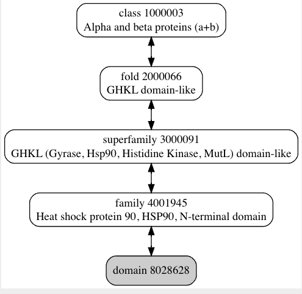

Code
// Create drawing area
divNGL = html`<div style="width:400px;height:300px;position:relative"></div>`;Peter Schmidtke
April 3, 2023
In this article I’ll go through the overall thought process of setting up a benchmark set. For the sake of simplicity I’ll do it for a single target to evaluate the performance of a binding site comparison algorithm. I’ll try to provide code whenever possible against public resources or snippets if a bit of scripting is needed. When the public domain information is insufficient, I might fall back to resources like 3decision, MOE families, which is not public domain knowledge, but can very much help fulfill the task at hand.
In order to show the overall process, let’s start with a well studied target & relatively easy target, HSP90. A usual guinea pig since my PhD in Xavier Barril’s lab, but it’s a good example to show without exploring too much in super large protein families in the beginning. I aim to apply the process outlined here later to a thrombin, a trypsin like serine protease, which will likely involve some adjustments.
The heat shock protein 90 is a rather abundant protein in the cell and helps during protein folding of not yet formed proteins, or protects already folded proteins from external stress (thermal stress for instance) - thus HSP = Heat Shock Protein. Let’s start with HSP90 alpha from the homo sapiens, even though they are common among eucaryotes. Several kinases are dependent (activated) on HSP90, especially those acting as hub. This is one of the reasons why HSP90 has been investigated as potential drug target for treatment of several forms of cancer. The action of HSP is dependent on ATP and the dephosphorylation of this molecule & the ATP binding site is located on a particular are in the N-terminal part of HSP90. This will be the binding site to focus on here.
HSP90 alpha human is composed of two domains: - the N-terminal Histidine kinase, DNA gyrase B and HSP90-like ATPase domain (ranging from amino acid 40 to 193) - the C-terminal HSP90 protein domain (196-714)
The ATP binding site of interest is on the N-terminal part and this is the part that you have the most crystal strucutres for in the RCSB today. A full length Alphafold model available in the public domain. NB: there appears to be another ATP binding site on the C-terminal part, that is only accessible when activated - so interesting to maybe look out for that one as well.
```{ojs}
//| code-fold: true
//| output: false
NGL = require("ngl@next");
// Create trajectory object
stage = new NGL.Stage(divNGL, { backgroundColor: "black"});
let pdbString = await FileAttachment("4cwr.pdb").blob();
structure = await stage.loadFile("../data/4cwr.pdb", {ext: "pdb", asTrajectory: false})
structure.addRepresentation("licorice");
structure.autoView();
```The binding site is composed of a section containing the adenin moety which is characterized by a beta sheet at the bottom of the site, and two helices lining the site. The sidechains exposed to the binding site lumen are globally hydrophobic, a part from the very important aspartate 93, which is interacting directly with the adenine moeity. The adenin moeity is sourrounded by water molecules and several of these watersare important hallmarks of several HSP90 binders. The ribose moeity is not forming any H-bonds with the protein itself but has hydroxyls oriented towards the solvent. The ether of the ribose is orented towards the valine 107, adjacent to a rather hydrophobic part of the pocket coated by Y139, F138 and W162. The triphospate is solvent exposed and interacting with a small helix-loop-helix motive which, as we will probably see a bit later part of the more mobile regions of the binding site.
Now we have defined a binding site of interest, let’s try to establish first a few obvious scenarios one might want to cover with a pocket comparison method. In my previous post I stated that the principle use case for binding site comparison methods that I’m focusing on is large scale comparison or screening. The underlying use cases that I’m mainly interested in are NOT protein function prediction, but rather the prediction of potential counter targets, or extracting bound ligands from related binding sites to inform structurally during my compound design cycle.
Let’s consider that we are working on a drug design project on the HSP90 N-terminal ATP binding site and we have our favourite structure of HSP90 as starting point, i.e. 4cwr.
If I want to find similar binding sites to my query binding site vs all known/putative binding sites, what hits I’d expect to get first in the hitlist ?:
These first five give a graduation up to which level another ATP binding site could be potentially close to the HSP90 binding site. These are the obvious clusters of sequences, structures & conformations one would expect to find. As a result, one can use this type of graduation also for validating binding site comparison methods. One major difference with the setting I’m laying out here, is that the background data encompasses the full RCSB PDB structures containing all ligand binding sites + putative binding sites (empty clefts). This sets the approach I’m suggesting into stark contrast with previous benchmark sets. Such previous sets were classically composed of a list of expected matches of binding site pairs and decoys (expected mismatches). As Vincent Le Guilloux, if you can avoid a threshold effect, avoid it! This is exactly such a case where a discrete split between a match & a mismatch is introduced. As a result my background data (what one usually calls a decoy) is the full pocketome and I’ll try to use metrics of success that measure, how many of the potentially expected hits are found before a bulk of less expected hits & why.
In the subsequent sections I’ll go through all the painful steps to create the dataset corresponding to each of the sections 1 to 5. The situation 6 & 7 are a bit more tricky to set up. As for 8 - that’s the big issue with binding site comparison benchmarking - you don’t know until you know, but I’ll try to do a bit of my homework on that as well!
Alright, here we go … the same sequence is the easiest case of all of them & several previous studies included a selection of structures, but as you’ll see even here to do things properly it gets quickly tricky. The following script will cover the required steps: - gather all structures (PDB codes) containing a resolved HSP90 alpha human N terminal domain - filter out structures with mutations on binding site residues compared to the wild type - get an all by all comparison of the binding sites (structurally speaking) which would allow for some rough clustering of conformations
If one considers that the SCOP family of this domain will likely contain other HSP90 Nter ATP binding sites then this is a useful resource to look for already assigned similarities by protein fold classification. This has been used already in several other papers in the litterature, but let’s exemplify here for the sake of completeness.
The N-ter ATP binding domain of HSP90 and the hierarchy of SCOP classifications can be found here.
